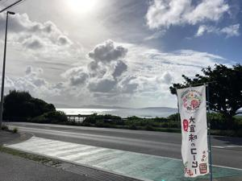
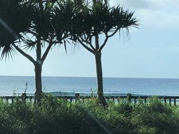
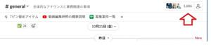

うるがいの話 ある日
最新: 副業の収入なし【うるがいの話 ある日】とは 一日だけのプログです
『うるがいの話』の最新一日だけのプログで、通信料が少なく経済的だ。カニの画像をクリックすると全ての日付が載る『うるがいの話』サイトを表示します
|
|
【うるがいの話】 うるがい(ｳﾙｶﾞｲ urugai)とは、『もずくがに』の名前でとても大きくなります。 |
|---|---|
|
|
【カミマヤーの話】 猫のことを方言でマヤーといいます。カミマヤー（kamimayaa）とは、神の猫のことです。 |
|
【たながぁの音楽】 たながぁ（ﾀﾅｶﾞｰ tanagaa）とは手長えびのことで、何種類かあり大きいのは車 エビぐらいになります。 |

|
【ぶながぁの話】 ぶながぁ(ﾌﾞﾅｶﾞｰ bunagaa)とは、赤い髪の毛、赤い身体、そして身長は１ｍ２０ｃｍ ぐらい、川の蟹を食べているの目撃された。場所は沖縄県国頭郡大宜味村のと ある村僕の隣近所に住んでいる爺さんから、聞いた話です。 |
|
|
【ギーマの話】 ギーマ(giima)とは、山原の里山に咲くスズランに似た、 花を付けます。実は食べられます、 気が付くと口の周りが紫になっています。 |
2022年11月01日 (火）副業の収入なし
17:00
 
年が明け期待していた副業、あれから１０カ月近く経った。研修は動画とＤＸ
人材の研修を終え、一応副業による収入を得られることになっている。しかし
案件が無い、ほとんどない・・・。副業による収入は、はるか前にあきらめた
しかし、副業のツールＳｌａｃｋをみると参加者が、１月に比べ６百程増えて
いる、研修は無料なので参加しているのかな。ハローワークインターネットサ
ービスには、有効期限が切れる３か月毎に更新を延長している（いつかは、就
職するもりなのである）。動画研修を終えた後、研修で利用したアドビの動画
ソフト（月３千円なり）をインストールせず良かった、赤字になるところだっ
た。ただ、三線のユーチューブ動画で歌詞を編集したく、アドビの２００１年
に発売されたサポートが切れた動画ソフト（ＡＤＯＢＥ ＰＲＥＭＩＥＲＥ
ＥＬＥＭＥＮＴＳ９）をヤフーオークションで１，７００円で落札し、研修の
ため購入したハイスペックのパソコン（１５万５千円）を使い、動画研修の能
力を生かして、三線新作（ユーチューブで『卒業写真 三線』を検索すると見
れる）をアップする暇な事する。 
子供が一年余りの無職生活を終え、今日から新しい職場で仕事をする。私はは
たして復職するだろうか、ヨメのお母さん次第である。
１６時５２分 ビットコインの総資産 ￥８、８１３↑